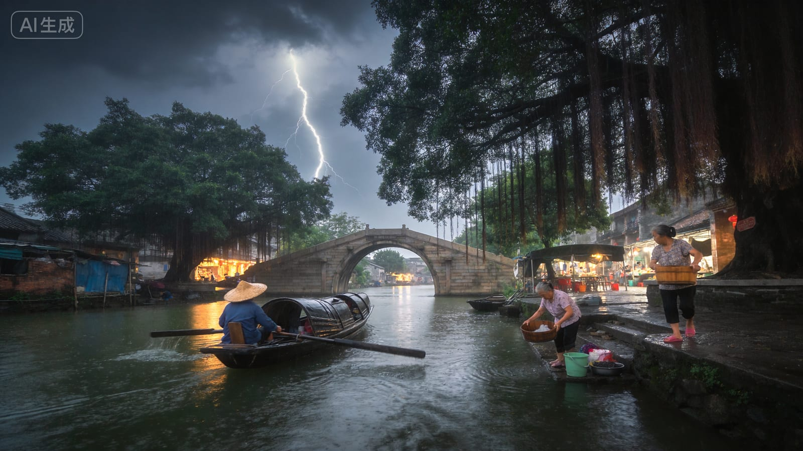
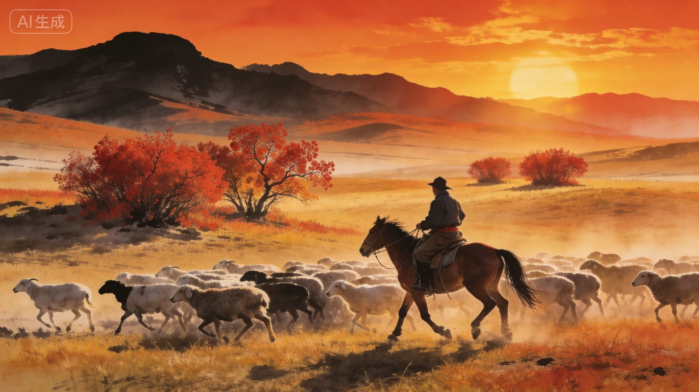
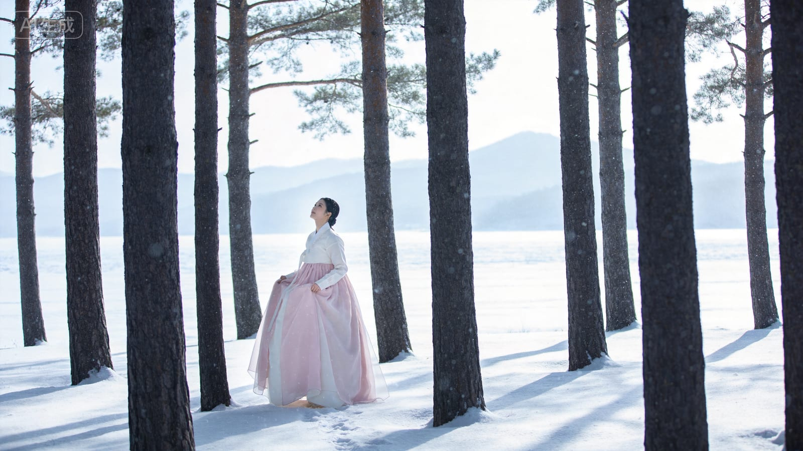
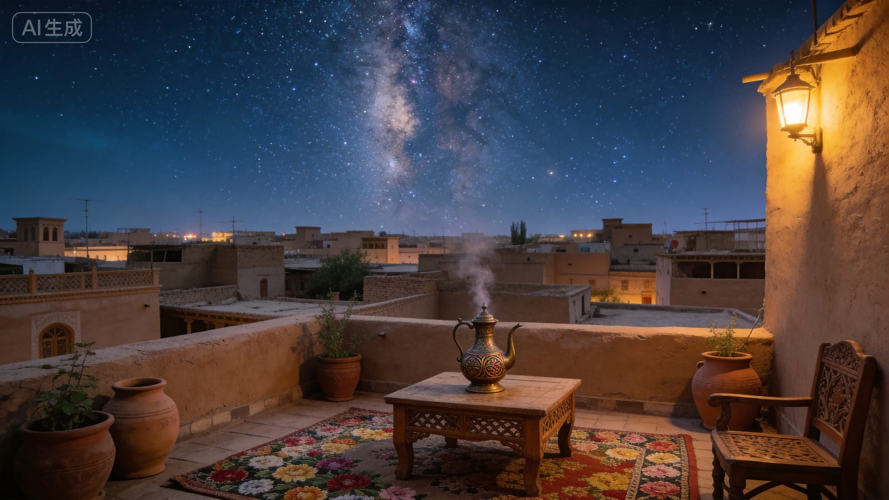
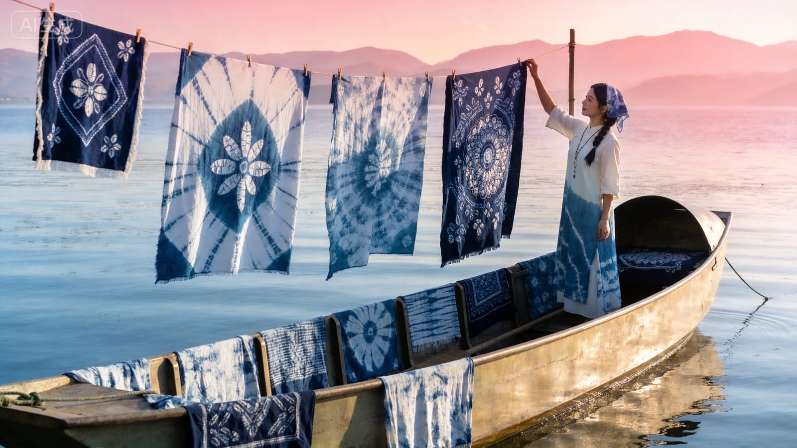

让旅程先于解释
我保留飞机、高铁、地铁与船，让观众先有一个“出发”的动作。交通只是入口，抵达之后，真正的主角是音乐。
从我演奏的岭南作品出发，让中国小提琴音乐在地图上被听见。这是一个数字音乐策展项目：选择一条路线、聆听作品、读一段演奏者的笔记，再带走你的声音明信片。 A digital curation project beginning with my performances of Lingnan repertoire. Choose a route, listen to a piece, read a performer's note, and take a sound postcard with you.
当前收录 8 首：我的岭南演奏 4 首，老师《华弦集》授权作品 4 首。标记对应作品的地域联系，并非录音地点；地图正在逐步生长。
我是来自岭南的广府小提琴演奏者。与其一开始就替全国的声音作总结，我选择从自己演奏过、生活中熟悉的作品出发，把音乐里的地域记忆讲清楚。岭南是第一章，不是整个中国的缩影。
老师李泽熙的《华弦集》启发我：不同地域的音乐，可以通过小提琴被重新认识。因此，我把自己的演奏与老师授权收录的作品放在同一张地图上，同时清楚区分作曲者、演奏者与策展者。
Lingnan is my starting point, not a stand-in for all of China. Inspired by my teacher's Hua Xian Ji collection, this project brings my performances and her authorised recordings into a shared, growing map.
查看项目分工与制作记录 ↗选择一种出发方式，循着交通的声音，走进我的音乐故乡。
Choose a way to arrive. Discover Lingnan through sound.
岭南的故事，从一次抵达展开。选择你喜欢的交通方式，让山水、街巷和水岸把你带到音乐之中。
选择方式 → 循声抵达 → 进入岭南篇
广州的城市轮廓、韶关的丹霞山色、珠海的海岸风景——从广东的不同窗口，走进岭南。画面为地标意象，非实际交通线路；广播暂留空。
李自立作曲。小时候去比赛，常听到别人拉这首。我在岭南长大，一听就知道它是岭南的声音。
Composed by Li Zili. As a child I often heard other players perform it at competitions. Having grown up in Lingnan, I could tell straight away that it sounded like home.
听一听，旋律的歌唱性与快速音型如何交替。
演奏：梁珏童
上大学后，我上了岭南音乐的课，开始研究这首曲子，写成论文发表；我也教学生拉它，最后又选它作为毕业考试曲目。研究让我知道，它的旋律来自汕尾渔歌，快速的琶音模仿古筝。可我最喜欢的，还是它的旋律，很美。
At university I took a course in Lingnan music and wrote a published article on this piece. I have taught it to my students, and I chose it for my graduation exam. Research showed me that its melody comes from Shanwei fishing songs and its fast arpeggios imitate the guzheng. But what I love most is simply the melody. It is beautiful.

广东音乐，严老烈根据古曲改编。我从小就听：外公外婆会哼，电视里也常放。
A classic of Cantonese music, adapted by Yan Laolie from an older tune. I grew up with it: my grandparents used to hum it, and it was often on TV.
听一听，短小的乐句怎样带出明快的节奏。
演奏：梁珏童
小学时，我在小天使交响乐团演过岭南音乐组曲，有《雨打芭蕉》《赛龙夺锦》，所以这些旋律记得特别深。高中音乐课上，老师正式介绍了岭南音乐，我才知道小时候听到的这些曲子有一个共同的名字。
In primary school I played a suite of Lingnan music with the Little Angel Symphony Orchestra, including Rain Hitting the Plantain Leaves and Dragon Boat Race. That is why these tunes stayed with me. Later, in a high school music class, I learned that the music I had heard as a child had a name: Cantonese music.
吕文成作曲。和《旱天雷》一样，它是陪我长大的声音，也是广东人心里“好意头”的音乐。
Composed by Lü Wencheng. Like Thunder in a Dry Sky, it is music I grew up with, and for Cantonese people it is a tune of good fortune.
听一听，上行的旋律如何积累期待。
演奏：梁珏童
有一天坐广州地铁，我忽然发现车厢里在放《步步高》。那一刻我才意识到，这首小时候听惯的曲子，一直在这座城市的日常里。
One day on the Guangzhou Metro, I noticed the train was playing Rising Step by Step. Only then did I realise that a tune I had known since childhood had been part of the city's everyday life all along.
李泽熙作曲，一首当代岭南作品。旋律很好听。
Composed by my teacher Li Zexi. A contemporary Lingnan piece with a beautiful melody.
听一听，旋律如何展开，又在哪里收住。
演奏：梁珏童
老师 2024 年先写下了一段旋律，2026 年再沿着这个意象写成这首曲子。听说我要做岭南篇，她授权我使用乐谱演奏，把它放进这张地图。传统的岭南音乐之后，这是一首今天写下的岭南声音。
She first wrote down a melody in 2024 and turned that idea into this piece in 2026. When she heard I was making a Lingnan chapter, she gave me permission to perform from her score and include it here. After the traditional pieces, this is Lingnan music written today.

《扎恩达勒》把地图带到东北。先听李泽熙的演奏，留意旋律和音色在这首作品里怎样变化。
Zandale takes the map to Northeast China. Listen to Li Zexi's performance and notice how the melody and tone change.
+ 走进达斡尔 · 一个音乐人的听觉笔记我的老师李泽熙在创作这首作品时，深入达斡尔族聚居地采集原生态曲调，再用小提琴的双音、和弦与泛音把它重新写出来。达斡尔人的世界，声音是辽阔的——呼伦贝尔草原上，马蹄踏过草浪、风穿过白桦林，牧人即兴哼起的曲调没有谱子，想到哪唱到哪，正如曲中小提琴自由游走的散板。这里的柳蒿芽汤、手把肉就着马奶酒，是大口吃肉、大声唱歌的豪爽。当琴弓拉出那悠长的呼喊，其实是在用一件西方乐器，贴近一种对着天地歌唱的本能。
When my teacher Li Zexi composed this piece, she travelled into Daur communities to collect original folk melodies, then rewrote them for violin using double stops, chords and harmonics. In the Daur world, sound is vast — on the Hulunbuir grasslands, hooves brush through waves of grass and wind moves through birch forests. A herder's improvised tune follows no score, sung as it comes, just as the violin wanders freely here. Willow-shoot soup, hand-held mutton and mare's milk wine speak of a frank, open life: eat heartily, sing loudly. As the bow draws out that long call, a Western instrument reaches toward an instinct — to sing to the open land.

《长白松》也是《华弦集》的一首。与《扎恩达勒》放在一起听，你会怎样描述两首作品的节奏与音色？
Changbai Pine is another work from Hua Xian Ji. Heard alongside Zandale, how would you describe their different rhythms and tones?
+ 走进长白山 · 一个音乐人的听觉笔记老师取材朝鲜族传统民歌，借用其特有的长短节奏，让小提琴在连跳弓与拨弦间，描摹长白山美人松的优雅。延边的朝鲜族村落里，伽倻琴的清音、长鼓的鼓点、节庆时的农乐舞，都带着这种富于弹性、张弛有致的呼吸感。打糕、冷面、辣白菜，是这片土地朴素又鲜明的味道。美人松在严寒中四季常青、挺拔不屈——当琴音清亮地立起来，听见的正是这种在寒冷里依然向上的坚韧。
My teacher drew on traditional Korean-Chinese folk music, borrowing its distinctive jangdan rhythmic patterns, letting the violin sketch the elegance of Changbai's Beauty Pine through spiccato and pizzicato. In the Korean villages of Yanbian, the clear tones of the gayageum, the beat of the janggu drum, and festival farmers' dances all carry this elastic, breathing sense of rhythm. Rice cakes, cold noodles and kimchi are the plain yet vivid flavours of this land. The Beauty Pine stands green and upright through the harshest cold — and when the violin's tone rises, bright and clear, what we hear is that same resilience reaching upward in the cold.

《喀什噶尔星空》把地图引向西北。先听李泽熙的演奏，再留意音乐的节奏从哪里开始变得鲜明。
Kashgar Starry Sky takes the map to Northwest China. Listen to Li Zexi's performance, then notice where the rhythm becomes more pronounced.
+ 走进喀什噶尔 · 一个音乐人的听觉笔记老师写的是南疆——喀什噶尔，丝绸之路上一片绵延千年的古老绿洲。她融入爵士乐的“切弓”（chopping）弓法，让节奏由慢到快、音色明暗交织，像一幅穿越千年的星河。喀什老城的巴扎集市里，都塔尔与热瓦普的弹拨、铜匠敲打的叮当、烤包子出炉的吆喝，与十二木卡姆那宏大热烈的音响交织在一起。土黄色的民居、头顶璀璨的银河——当琴音由静谧转向奔放，听见的是这座千年古城在夜色里依然跳动的脉搏。
My teacher wrote of southern Xinjiang — Kashgar, an ancient Silk Road oasis alive for a thousand years. She wove in the jazz chopping bowing technique, building rhythm from slow to fast, light and shadow interlacing like a galaxy across millennia. In the bazaars of Kashgar's old city, the plucking of the dutar and rawap, the clang of coppersmiths and the calls of baked-bun sellers intertwine with the grand, fervent sound of the Twelve Muqam. Earth-yellow houses, a brilliant Milky Way overhead — as the music turns from stillness to abandon, we hear the pulse of this ancient city still beating in the night.

最后一首以洱海为题。听完再回看标题：你听见的是水面、行舟，还是别的画面？
The final work takes its title from Erhai Lake. After listening, return to the title: did you hear water, a boat, or something else?
+ 走进洱海 · 一个音乐人的听觉笔记老师以白族文化为底色，写洱海山水与人和谐相依的意境，旋律舒缓清澈，如轻舟荡漾。大理的白族村落里，三道茶的一苦二甜三回味、扎染布上晕开的蓝、本主庙会上的洞经古乐，都透着一种从容的慢。苍山雪、洱海月，下关风、上关花——白族人把山水写进了日子里。当琴音如水般流淌，听见的是一种与天地相处得格外松弛的南国气韵。
My teacher grounded this piece in Bai ethnic culture, evoking the harmony between people and the landscape of Erhai Lake, its melody flowing and clear like a drifting boat. In the Bai villages of Dali, the three-course tea — bitter, sweet, then lingering — the indigo blooming across tie-dyed cloth, and the ancient Dongjing music at temple fairs all carry an unhurried calm. Cangshan snow and Erhai moon, the wind of Xiaguan and flowers of Shangguan — the Bai people have woven landscape into daily life. As the music flows like water, we hear a southern serenity, a uniquely relaxed way of being with the world.
抵达、聆听，然后带走一段回响。留下一句听后感受，生成属于你的广东手信明信片。
我希望未来有更多演奏者带着自己演奏过的中国作品加入。每一个新亮点，都不只是一份音频，而是一位演奏者、一首作品和它与地方文化的联系。
A growing map, shaped by performers. Each new point would connect a recording, a musician and the story of a place.
这不是已经上线的公共投稿平台。你可以填写并下载一份投稿草稿；内容只在当前页面处理，不发送服务器，不会自动点亮地图。刷新后填写内容不保留。
这里记录我如何选择作品、安排声音与画面，以及让一次个人演奏逐渐成为可共同参与的展览。
我保留飞机、高铁、地铁与船，让观众先有一个“出发”的动作。交通只是入口，抵达之后，真正的主角是音乐。
广州塔、韶关丹霞山、珠海日月贝与城市地铁，成为四扇不同的窗。我不想让“岭南”只剩下一座城市的形象。
我自己的演奏是起点，老师授权的作品把视野打开。未来，我希望更多演奏者带着作品与它的地方故事，一起点亮地图。
策展、岭南篇演奏与最终内容选择：梁珏童。《华弦集》作曲与演奏：李泽熙，经授权收录。网页交互与交通插画使用 AI 辅助实现，作品配图使用 AI 生成。